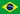
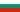

Reseña histórica
- En 1949 se realizó el primer Campeonato Mundial en su versión masculina, y en 1952 se llevó a cabo el torneo femenino. Ambos eventos constituyen los acontecimientos más importantes del voleibol a nivel internacional, junto con los Juegos Olímpicos, desde 1964.
- Estas competiciones mundiales inmediatamente generaron mucho entusiasmo, y el número de jugadores y de federaciones nacionales afiliadas a la FIVB ha crecido vertiginosamente, de modo que el voleibol ha cobrado un gran interés en casi todas las partes del mundo.
- Estos eventos promovidos hace más de 60 años por la FIVB han propiciado el surgimiento de otros con gran envergadura como la Liga Mundial para los hombres y el Grand Prix para las damas; sin dudas han sido los Campeonatos Mundiales los precursores de estos eventos, y ha posibilitado al deporte de la malla alta aumentar su credibilidad a nivel mundial convirtiéndolo en uno de los deportes más seguidos y practicados en el orbe.
- Los Campeonatos del Mundo para hombres y mujeres son precedidos por un proceso de clasificación mundial. En el 2010 participaron 214 equipos nacionales, de los cuales clasificaron los mejores 24 por cada género para competir en el Torneo Final.li>Para que el partido se desarrolle con total normalidad y sin incidentes, tiene que haber un equipo arbitral formado por un primer árbitro, un segundo árbitro, un anotador, un anotador asistente y dos o tres jueces de línea. Sí que es cierto que es el primer árbitro el que tiene todo el poder de decisión sobre cualquier jugada.
Medallero histórico del Torneo Masculino en los juegos olimpicos
| Actualizado hasta el 2010 |
| pos. | País | Oro | Plata | Bronce | Total |
| 1 | 6 | 2 | 3 | 11 | |
| 2 |  | 3 | 2 | 0 | 5 |
| 3 | 3 | 1 | 0 | 4 | |
| 4 | 2 | 1 | 0 | 3 | |
| 5 | 2 | 1 | 0 | 3 | |
| 6 | 1 | 0 | 1 | 2 | |
| 7 | 1 | 0 | 0 | 1 | |
| 8 | 0 | 2 | 2 | 4 | |
| 9 |  |
0 | 2 | 2 | 4 |
| 10 |  | 0 | 1 | 4 | 5 |
| 11 | 0 | 1 | 0 | 1 | |
| 12 | 0 | 1 | 0 | 1 | |
| 13 | 0 | 1 | 0 | 1 | |
| 14 | 0 | 0 | 2 | 2 | |
| 15 | 0 | 0 | 1 | 1 | |
| 15 | 0 | 0 | 1 | 1 | |
| 15 |  |
0 | 0 | 1 | 1 |